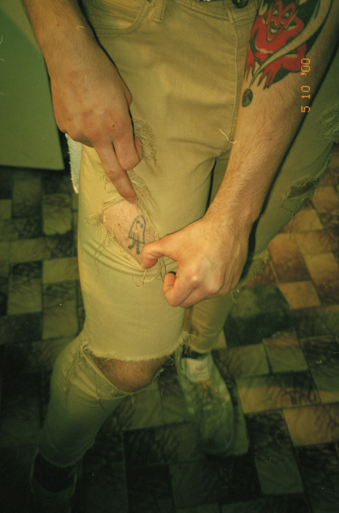

Cilantro (a ghost)
Cilantro (a ghost)
TATTOO ONE
Name - Alex Teretka
Tattoo and placement - A ghost with legs and boots on the upper thigh.
How old are you? - 19 years old.
How old were you when you got this tattoo? - 17 years old.
How many tattoos do you have in total? - 7
How much did it cost you? - This one was free.
Where did you get it done? - This one was in a friends in a car, at Penfield beach.
How long did it take? - 2 hours, this one was actually the longest because it was stick and poke.
How impulsive was it? - Was supposed to be the word fag at first. It was very impulsive. A super last minute decision.
Does this tattoo have a meaning behind it? - No meaning but I really like cilantro.
Is it your own artwork? - Nope!
BACK BACK BACK BACK BACK BACK BACK BACK
